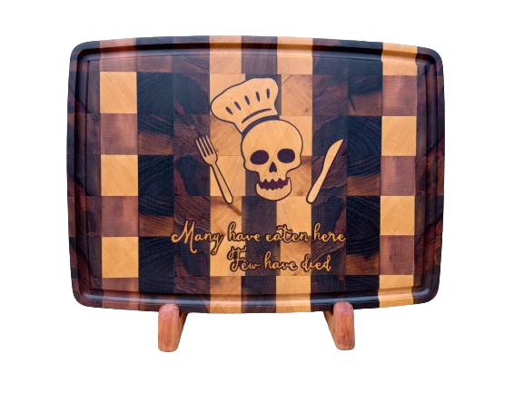
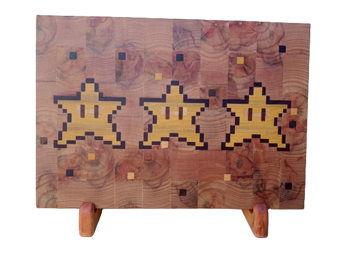
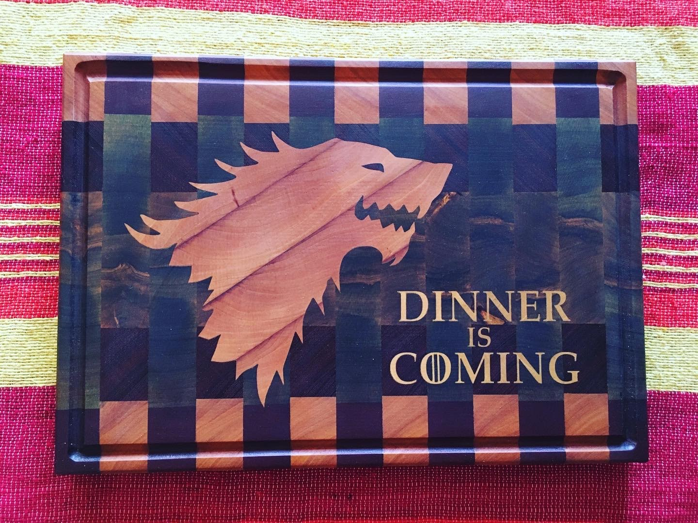
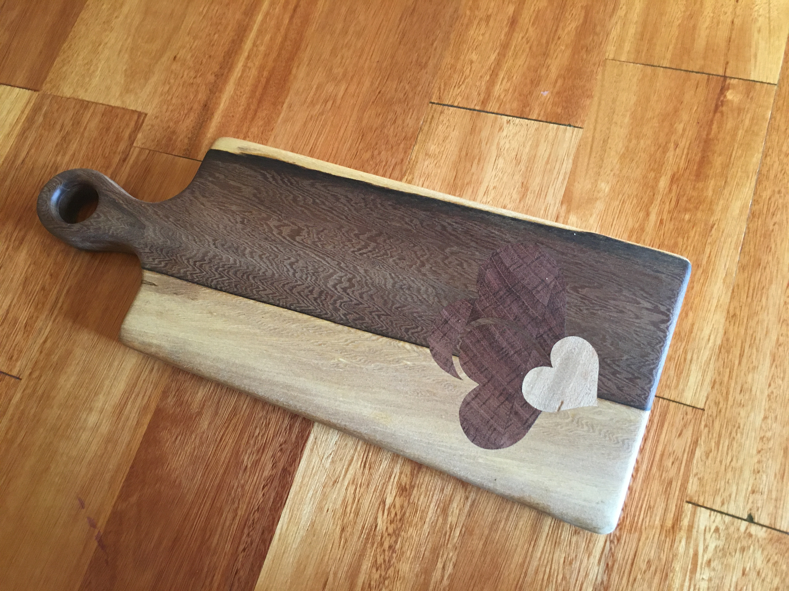

Destacados



Nuestras Tablas
A traves de los diferentes colores y texturas de las maderas con las que trabajamos, logramos diseños únicos con la técnica de insertos. Nuestras tablas son 100% madera, sin ningún tipo de tintura o colorante, aptas para el contacto con alimentos. Trabajamos con maderas nobles, duras y semiduras, algunas nuevas y otras recuperadas.

End Grain
La posición de las fibras, aporta mayor durabilidad y cuidado para mantener el filo del cuchillo.

Veta
Permiten apreciar las vetas naturales de la madera.